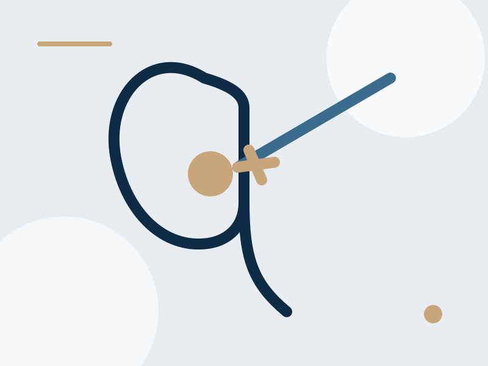

Dolor
Dolor en espalda o costado
Puede presentarse como dolor intenso y repentino en costado, espalda o abdomen.
Los cálculos urinarios pueden provocar dolor intenso, obstrucción urinaria e infecciones. El Dr. José Ramón Márquez ofrece valoración y tratamiento especializado para piedras en riñón en Hermosillo.

Algunos signos frecuentes que pueden presentarse con piedras en riñón o cálculos urinarios.
Puede presentarse como dolor intenso y repentino en costado, espalda o abdomen.
La presencia de sangre en la orina puede acompañar a los cálculos urinarios.
Dolor, ardor al orinar o urgencia urinaria pueden presentarse según la localización del cálculo.
El tratamiento depende del tamaño, localización del cálculo y síntomas del paciente.
En algunos casos se indica manejo conservador, hidratación y seguimiento especializado.
La valoración clínica y de imagen permite definir la estrategia más adecuada.
En casos seleccionados se puede requerir tratamiento endourológico o cirugía para resolver el problema.
Atención especializada para piedras en riñón, dolor urinario y cálculos renales en Hermosillo.
Dr. José Ramón Márquez
Urólogo en Hermosillo
Ubicación: Celtara Medical & Professional Center, Piso 7, consultorio 726.
Si presentas dolor intenso, sangre en la orina o dolor al orinar, agenda una valoración especializada.
La atención oportuna ayuda a definir el tratamiento más indicado y prevenir complicaciones.